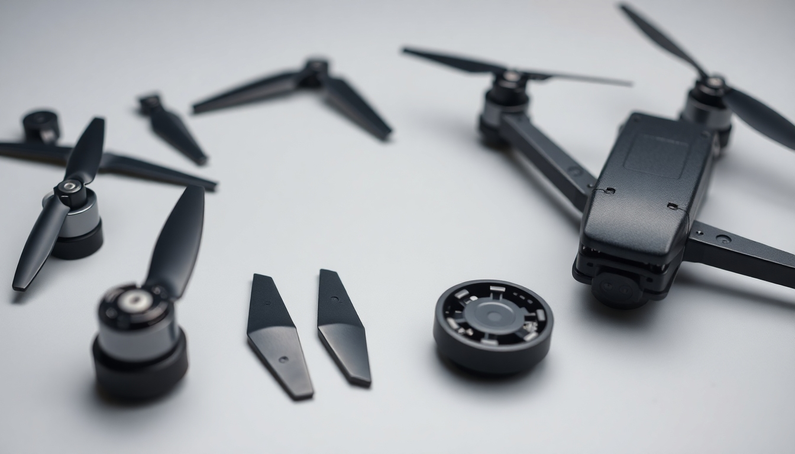

在工業級與商用無人機（如農用植保機、電力／風電巡檢機、物流與測繪無人機）的設計中，結構件必須同時兼顧高比剛度、全天候尺寸穩定性、耐化學藥劑與大量生產的成本效益。傳統 PA66 玻纖增強材料在潮濕環境下容易吸水導致剛性大幅衰退與尺寸膨脹；而連續碳纖維熱固性複合材雖剛性極高，卻受限於手工鋪層、高單價與複雜結構難以一體成型。MXD6（聚己二醯間苯二甲胺）高纖增強複合材料（MXD6+GF / MXD6+CF）正好填補兩者之間的工程缺口。

MXD6 在無人機領域的四大核心工程優勢
高模量與優異的「濕態剛性保持率」
MXD6 分子鏈含苯環結構，玻璃轉移溫度（Tg 約 85–90℃）高於 PA66。搭配 50% 玻纖（GF50）或碳纖（CF）增強後，具備極高彎曲模量，且因吸水率遠低於 PA66，在高濕度、雨霧或海風環境下仍能維持結構剛性，不易軟化變形。
低吸水與精密尺寸穩定（Low Warpage）
機臂折疊關節、軸承座與雲台機構對公差極為敏感。MXD6 低吸水率與較低的成型收縮率，能大幅減少因環境溫濕度變化引起的翹曲與間隙變化，確保長期飛行的裝配精度與動平衡一致性。
以塑代鋁：一體化注塑輕量化
MXD6+GF50 密度約 1.60–1.65 g/cm³，相較於鋁合金壓鑄件（約 2.7 g/cm³）可減重約 35–40%。優異的高流動性（如 M5800H）可一次注塑出複雜加強筋與埋入螺母結構，免去 CNC 二次加工，顯著降低量產成本。
優異表面光澤與耐化學腐蝕
即使在高玻纖填充（50–60%）下，MXD6 仍不易產生浮纖，成型表面光滑平整，有利於降低氣動阻力或進行後續噴塗。同時對農藥、機油、溶劑與鹽霧具備良好耐受性，非常適合農用植保與海上巡檢環境。
典型適用無人機零組件
機臂折疊關節與鎖緊卡扣、無刷馬達固定座、雲台支架與結構框架、快拆電池鎖扣與外殼骨架，以及搭配碳纖／增韌改性配方的高剛性工業級注塑螺旋槳。
實務選型提醒（工程評估）
MXD6 本身屬於高剛性、低延展性半芳香族尼龍，室溫缺口衝擊韌性低於 PA66 與 PC。若部件面臨高頻直接撞擊（如 FPV 競速穿越機螺旋槳），建議採用 PC 或搭配增韌改性／PA66 共混配方，並依實際載荷進行測試驗證。
材料工程性能比較（工業無人機結構件視角）
| 評估指標 | PA66 + 玻纖 (GF30–50) | MXD6 複合材料 (GF50 / CF30) | 連續碳纖維複合材 (CFRP) | 壓鑄鋁合金 (ADC12) |
|---|---|---|---|---|
| 密度（輕量化） | 約 1.37–1.56 g/cm³ | 約 1.50–1.65 g/cm³（比鋁輕 ~40%） | 約 1.50–1.55 g/cm³ | 約 2.70 g/cm³（較重） |
| 濕態剛性保持 | 較差（吸水後模量明顯下降） | 優異（低吸水，濕態模量穩定） | 極佳（幾乎不受濕度影響） | 極佳 |
| 尺寸精度與耐候 | 易受濕度影響而膨脹 | 極佳（低吸水、低翹曲、耐農藥／鹽霧） | 極佳 | 佳（需陽極或塗裝防蝕） |
| 耐衝擊韌性 | 中上（吸水後韌性增加） | 中等（需依結構需求搭配增韌改性） | 低（受撞易脆斷／分層） | 高（受撞塑性變形） |
| 複雜結構量產性 | 高（射出成型） | 極高（高流動、無浮纖、可一體成型） | 低（多為鋪層／熱壓，成本高） | 中（壓鑄後常需 CNC 精加工） |
| 推薦應用定位 | 一般消費級結構件、低負載外殼 | 工業／植保／巡檢機結構關節、馬達座、雲台件、高剛性注塑槳 | 大型機管材、主機身承力板、高階大尺寸槳 | 高導熱／極高負載金屬承力件 |
註：以上為工程材料一般典型參考範圍，實際機械強度、衝擊韌性與耐化學性依玻纖／碳纖比例、增韌配方與成型條件而異，請以原廠 TDS 與實件測試為準。
推薦改性基材牌號（七彩化學 愛寶力™ MXD6）
愛寶力™ M5800H（高流動／高填充）
超高熔融指數，專為 50–60% 高玻纖或碳纖增強設計。薄壁複雜結構件充模順暢，成品表面高光澤、無明顯浮纖，適合精密折疊關節與外觀結構件。
下載 M5800H TDS (PDF) →愛寶力™ M5800（複合協同增強）
適合與 PA66 等尼龍體系共混改性，在保留一定衝擊韌性的同時，大幅提升材料彎曲模量並顯著降低整體吸水率，兼顧剛性與耐衝擊平衡。
下載 M5800 TDS (PDF) →愛寶力™ M6100（中黏度均衡型）
中黏度 MXD6 基材，具備優異的機械強度與模量，適合玻纖、碳纖或礦物複合增強，滿足高負載馬達座、齒輪箱與工業支架的長期耐疲勞需求。
下載 M6100 TDS (PDF) →